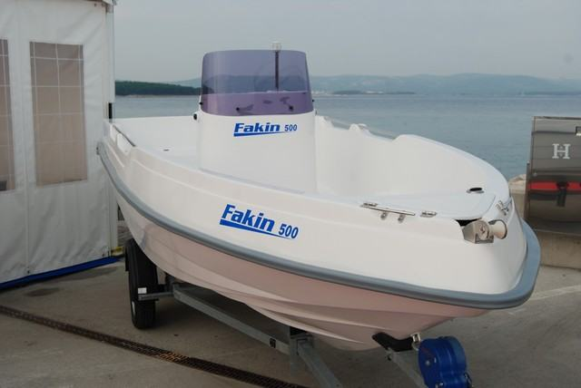
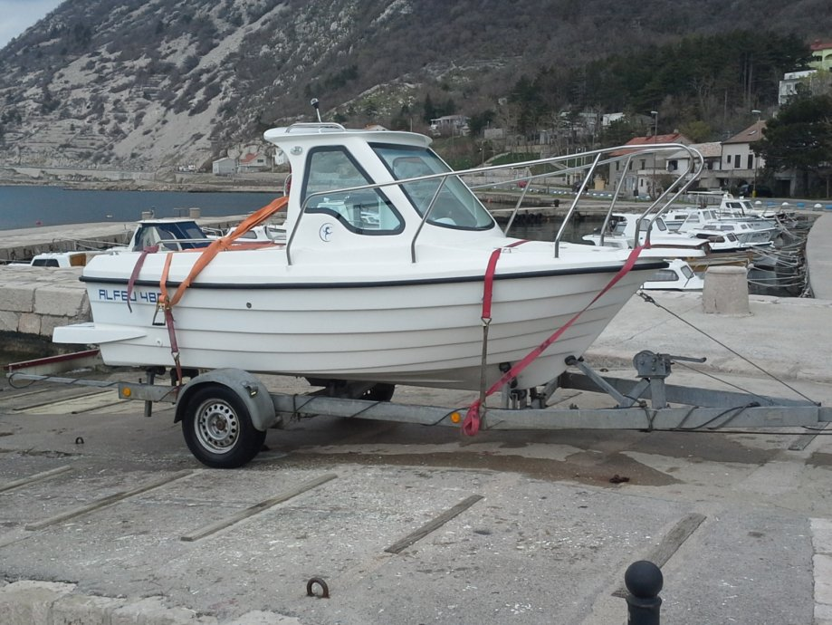
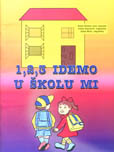
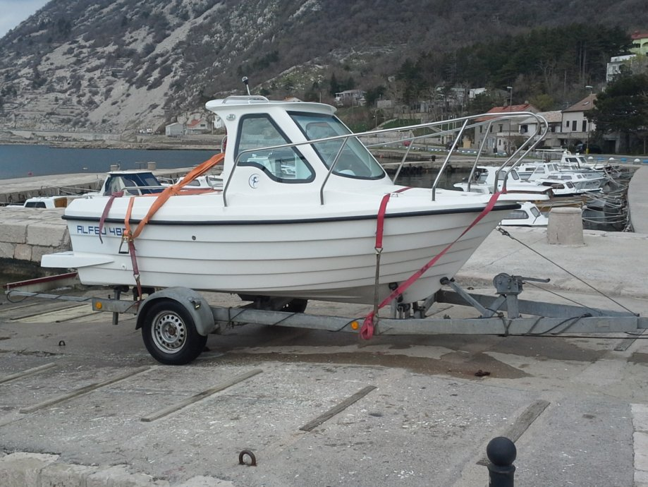
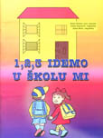

NOVOSTI




Novi brod Fakin 500!
Alfej predstavio svoj novi gliser s kojim planira od nove godine izaći na tržište! Više ...

Testiranje Alfej 485 a.k.a. Alfej 500
Novo u ponudi Alfeja! Na testiranju se odlično pokazao novi prozivod Alfej 485 a.k.a. Alfej 500. Više ...
Fini fini vitamini!
Autorica N.V. izbacila novu slikovnicu Fini fini vitamini koja, uz djecu, potiče i starije na ispravnu i pravilnu prehranu u ovo doba koje nas je zadesilo. Više ...

1, 2, 3 IDEMO U ŠKOLU MI
Skupina odgajatelja i učitelja razredne nastave pripremili su radne listove za predškolsku dob. Više ...
Zbirka zadataka "ah, ta MATEMATIKA"
Učiteljica razredne nastave R.G. predstavila je još jedno od svojih djela. Zbirka zadataka za školsku dob "ah, ta MATEMATIKA" dostupna je u svim knjižarama. Više ...